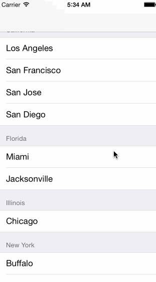

UI Elements¶
UILabel¶
Non editable text.
UITextField¶
Like UILabelbut editable. But attention, typing on an iPhone is
secondary, the keyboard is too small. On an iPad it is already better.
The keyboard appears when UITextField becomes “first responder”
Will be either automatically when the user taps
Or you can do this manually by sending
becomeFirstRespondermessageTo make the keyboard go away, send
resignFirstResponderto the UITextField
Delegate can get involved with Return Key
func textFieldShouldReturn(sender: UITextField) // sent when Return key is pressed
// Often times you will `sender.resignFirstResponder` in this method
Returns whether to do a normal processing when Return key is pressed (e.g. target/action).
Keyboard¶
Controlling the appearance of the keyboard Set the properties in the
UITextInputTraits protocol (which UITextField implements).
var UITextAutocapitalizatinoType autocapitalizationType // words, sentences etc.
var UITextAutocorrectionType autocorrectionType // yes or no
var UIReturnKEyType returnKeyType //Go, Search, Google, Done etc.
var BOOL secureTextEntry // for passwords etc
var UIKeyboardType keyboardType // ASCII, URL, PhonePAd etc.
The keyboard comes always up over other views.
You may need to adjust your UI for that. The TextField should always be visible. You can react to
UIKeyboard{Will,Did}{Show,Hide}Notifications // send to UIWindow
You can register a method to get called when a named “event” occures like this
Notifications¶
NSNotificationCenter.defaultCenter().addObserver(self,
selector: "theKeyboardAppeared:",
name: UIKeyboardDidShowNotification,
object: view.window)
The Event here is UIKeyboardDidShowNotification. The object is the one
who is causing the event to happen (our MVC’s window).
func theKeyboardAppeared(notification: NSNotification) will get
called when it happens. The notification.userInfo will have details
about the appearance. UITableViewController listens for this &
scrolls table automatically if a row has a UITextField.
Other properties & functionality¶
// Propterty
var clearsOnBeginEditing: Bool
var adjustFontSizeToFitWidth: Bool
var minimumFontSize: CGFloat // always set this if you set adjustFontSizeToFitWidth
var placeholder: String // drown on gray when TextField is empty
var background/disableBackground: UIImage
var defaultTextAttributes: Dictionary // applies to entire Text
// Functionality
// UITextField have left and right overlays
// Keyboard have accessory views appearing above the keyboard
var inputAccessoryView: UIView // UITextField method
UITableView¶
Very important class for displaying data in a table
One-dimensional table
Subclass of
UIScrollViewTable can be static or dynamic
Lot of customization via a
dataSourceprotocol and adelegateprotocolVery efficient even with very large sets of data
There are two styles of TableView’s. Plain
Dynamic List

Grouped
Static and Grouped 
Static
Static means that these cells are set up in the storyboard only. You can edit them however you want including dragging buttons, etc. into them (and wiring up outlets to the Controller).
Space is partitioned
E.g. Setting App
Dynamic
Almost always in Plain TableView style
Cells in cells are templates which will be repeated for however many rows are needed to display the data in MVC’s Model
Elements¶
Elements
Table Header
Sections
Section Header
Table Cell
Section Footer
Table Footer
Cell Types¶

Subtitle
UITableViewCellStyle.SubtitleBasic
.DefaultRight Detail
Value1Left Detail
.Value2Custom
You need to create a custom subclass
Then you can wire up outlet etc.
Cell Accessory¶
UITableViewController¶
Provides an convenient packaging of a UITableView in an MVC. The
self.view of a UITableViewControllers need to be a
UITable View. The UITableViewController is connected to the
UITableView via 2 Referencing Outlets
dataSource
delegate
Protocols¶
Connection to code are made using the UITableView's datasource and
delegate
delegate is used to control how the table is displayed (it’s look and feel)
datasource provides the data that is displayed inside the cells
How many section in the table
How many rows in each section
Give me a view to use to draw each cell at a given row in a given section
The UITableView Controller automatically sets itself as the
UITableView delegate & datasource. Your UITableViewController
subclass will also have a property pointing to the UITableView
var tableView: UITableView // self.view in UITableViewController
##### DataSource implementation Providing a UIView to draw each row. It
has to be a UITableViewCell. The Cells are constantly reused. The
UITableView will ask its UITableViewDataSource for the
UITableViewCell for a row…
func tableView(tv: UITableView, cellforRowatIndexPath indexPath: NSIndexPath) -> UITableViewCell {
// get data for a cell (can be as simple as a 2dim array)
let data = myInternalDataStructure[indexPAth.section][indexPath.row]
// get cell to use
let dequeued: AnyObject = tv. dequeueReusableCellWithIdentifier("MyCell", forIndexPath: indexPath)
let cell = dequeued as UITableViewCell // because it was AnyObject
// For a NON Custom Cell
cell.textLabel?.text = "Title"
cell.detailTextLabel?.text = "Subtitle"
// For a Custom Cell
cell.publicAPIofMyTableViewCell = data.theDataTheCellNeedsToDisplayItsCustomLabelsEtc
...
return cell
}
Dynamic Table to know how many rows and sections there are
func numberOfSectionsInTableView(sender: UITableView) -> Int
func tableView(sender: UITableView, numberOfRowsInSection: Int) -> Int
Number of sections is 1 by default.
numberOfRowsInSections is required